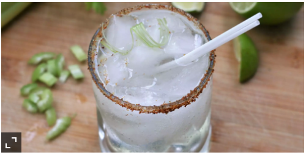

Celerita

Description
Turn flavored bubbly water or hard seltzer into a cocktail for two in no time flat with this easy recipe. Garnish this with salt and chipotle pepper or Hatch chile powder on the rim and a leafy celery stalk.
Ingredients
- 4 tablespoons chopped celery
- 1 teaspoon white sugar
- 3 ounces tequila
- 1 (12 fluid ounce) can lime-flavored seltzer water
Steps
- Muddle celery and sugar together in a mixing glass until crushed
- Add tequila and stir to dissolve sugar
- Strain into 2 ice-filled Collins or rocks glasses
- Top with seltzer
- Drink up
Home